<title>Matter UI Renditions</title>
<meta name="claude:viewport-fit-sides" content="cover">
<link rel="stylesheet" href="https://fonts.googleapis.com/css2?family=Cormorant+Garamond:wght@600&family=Lato:wght@400;700&family=Montserrat:wght@600&family=JetBrains+Mono:wght@400;700&display=swap">
<style>
  /* Layout: one navy title band, then a white working canvas. Three columns compare the
     renditions; the scorecard and galleries sit below. Tokens follow DTL design/tokens.yaml. */
  :root {
    --navy: #081524;
    --navy-elevated: #1b2c3e;
    --navy-soft: #122032;
    --green: #8ae158;
    --green-on-light: #4f9e2f;
    --teal: #00b8c4;
    --purple: #8a5eb0;
    --warning: #e8a53a;
    --error: #d64545;
    --on-dark: #ffffff;
    --on-dark-soft: #b6c2cf;
    --on-dark-muted: #7d8b9a;
    --hairline-on-dark: #24354a;

    --canvas: #ffffff;
    --canvas-soft: #f5f8fa;
    --hairline: #e3e8ee;
    --hairline-strong: #c9d2dc;
    --ink: #0d1522;
    --body: #333c47;
    --muted: #5c6773;
    --faint: #8b95a1;
    --accent-text: #4f9e2f;
    --shadow-float: 0 8px 24px rgba(8, 21, 36, 0.14);

    --serif: "Linux Libertine", "Cormorant Garamond", "Times New Roman", serif;
    --sans: "Creato Display", "Lato", "Segoe UI", sans-serif;
    --caps: "Montserrat", "Creato Display", "Lato", sans-serif;
    --mono: "JetBrains Mono", ui-monospace, Menlo, Consolas, monospace;
  }
  @media (prefers-color-scheme: dark) {
    :root:not([data-theme="light"]) {
      --canvas: #081524; --canvas-soft: #122032; --hairline: #24354a; --hairline-strong: #33475f;
      --ink: #ffffff; --body: #b6c2cf; --muted: #7d8b9a; --faint: #5c6773; --accent-text: #8ae158;
      color-scheme: dark;
    }
  }
  :root[data-theme="dark"] {
    --canvas: #081524; --canvas-soft: #122032; --hairline: #24354a; --hairline-strong: #33475f;
    --ink: #ffffff; --body: #b6c2cf; --muted: #7d8b9a; --faint: #5c6773; --accent-text: #8ae158;
    color-scheme: dark;
  }

  * { box-sizing: border-box; }
  body {
    margin: 0;
    background: var(--canvas);
    color: var(--body);
    font-family: var(--sans);
    font-size: 16px;
    line-height: 1.55;
  }
  ::selection { background: var(--green); color: var(--navy); }
  a { color: var(--accent-text); }
  a:focus-visible, button:focus-visible { outline: 2px solid var(--accent-text); outline-offset: 2px; }
  img { max-width: 100%; display: block; }

  .wrap {
    max-width: 1200px;
    margin: 0 auto;
    padding-left: max(16px, env(safe-area-inset-left, 0px));
    padding-right: max(16px, env(safe-area-inset-right, 0px));
  }

  .band { background: var(--navy); color: var(--on-dark); }
  .band .wrap { padding-block: 56px 48px; }
  .eyebrow {
    font-family: var(--caps); font-size: 13px; font-weight: 600; letter-spacing: 3px;
    text-transform: uppercase; line-height: 1.4;
  }
  .band .eyebrow { color: var(--on-dark-soft); }
  .band h1 {
    font-family: var(--serif); font-weight: 600; font-size: clamp(36px, 5vw, 56px);
    line-height: 1.08; letter-spacing: 0.5px; margin: 16px 0 12px; text-wrap: balance;
  }
  .band p { max-width: 62ch; margin: 0; color: var(--on-dark-soft); font-size: 18px; font-weight: 300; }
  .rule-wide { height: 3px; background: var(--green); }

  main .wrap { padding-block: 48px 64px; display: grid; gap: 64px; }
  section > h2 {
    font-family: var(--serif); font-weight: 600; font-size: 30px; line-height: 1.2;
    letter-spacing: 0.5px; color: var(--ink); margin: 0 0 8px; text-wrap: balance;
  }
  .rule { width: 40px; height: 3px; background: var(--green); margin: 0 0 24px; }
  section > p.lede { max-width: 68ch; margin: 0 0 24px; }
  .num { font-family: var(--mono); font-variant-numeric: tabular-nums; }

  /* Verdict */
  .verdict { display: grid; grid-template-columns: 1fr; gap: 24px; }
  @media (min-width: 900px) { .verdict { grid-template-columns: 1.3fr 1fr; } }
  .verdict-copy { max-width: 62ch; }
  .verdict-copy p { margin: 0 0 12px; }
  .verdict-copy ol { margin: 0; padding-left: 20px; }
  .verdict-copy li { margin-bottom: 8px; }
  .totals { display: grid; grid-template-columns: repeat(3, 1fr); gap: 12px; align-content: start; }
  .stat {
    border: 1px solid var(--hairline); border-radius: 10px; padding: 20px 16px;
    background: var(--canvas); color: var(--ink); min-width: 0;
  }
  .stat .eyebrow { color: var(--muted); font-size: 11px; letter-spacing: 2px; }
  .stat .value { font-family: var(--serif); font-size: 40px; font-weight: 600; line-height: 1.1; margin-top: 8px; }
  .stat .of { font-family: var(--sans); font-size: 13px; color: var(--muted); }
  .stat.featured { background: var(--navy-elevated); border-color: var(--hairline-on-dark); color: var(--on-dark); }
  .stat.featured .eyebrow { color: var(--on-dark-soft); }
  .stat.featured .of { color: var(--on-dark-muted); }
  .stat.featured .pick {
    display: inline-block; margin-top: 10px; background: var(--green); color: var(--navy);
    font-family: var(--caps); font-size: 11px; letter-spacing: 2px; text-transform: uppercase;
    font-weight: 600; padding: 4px 8px; border-radius: 2px;
  }

  /* Three columns */
  .cols { display: grid; grid-template-columns: 1fr; gap: 24px; }
  @media (min-width: 860px) { .cols { grid-template-columns: repeat(3, 1fr); } }
  .col { border: 1px solid var(--hairline); border-radius: 10px; overflow: hidden; background: var(--canvas); min-width: 0; display: flex; flex-direction: column; }
  .col figure { margin: 0; border-bottom: 1px solid var(--hairline); background: var(--navy); }
  .col figure button { display: block; width: 100%; padding: 0; border: 0; background: none; cursor: zoom-in; }
  .col figure img { width: 100%; aspect-ratio: 16 / 10; object-fit: cover; object-position: top left; }
  .col-body { padding: 20px 20px 24px; display: grid; gap: 12px; align-content: start; }
  .col .letter { font-family: var(--serif); font-size: 30px; font-weight: 600; color: var(--ink); line-height: 1; }
  .col h3 { margin: 0; font-size: 18px; font-weight: 700; color: var(--ink); line-height: 1.35; }
  .col .branch { font-family: var(--mono); font-size: 12px; color: var(--muted); }
  .col p { margin: 0; font-size: 14px; }
  .kv { display: grid; grid-template-columns: auto 1fr; gap: 4px 12px; font-size: 13px; margin: 0; }
  .kv dt { color: var(--muted); font-weight: 700; }
  .kv dd { margin: 0; }
  .col ul { margin: 0; padding-left: 18px; font-size: 14px; }
  .col li { margin-bottom: 4px; }
  .col li.minus { color: var(--muted); }
  .col .role { color: var(--accent-text); font-weight: 700; font-size: 13px; }

  /* Scorecard */
  .tablewrap { overflow-x: auto; border: 1px solid var(--hairline); border-radius: 6px; }
  table { border-collapse: collapse; width: 100%; min-width: 760px; font-size: 14px; }
  th, td { text-align: left; vertical-align: top; padding: 12px 14px; border-bottom: 1px solid var(--hairline); }
  thead th {
    background: var(--canvas-soft); color: var(--muted); font-family: var(--caps);
    font-size: 11px; letter-spacing: 2px; text-transform: uppercase; font-weight: 600;
  }
  tbody th { font-weight: 700; color: var(--ink); width: 22%; }
  tbody th small { display: block; font-weight: 400; color: var(--muted); font-size: 12px; margin-top: 2px; }
  td .score { font-family: var(--mono); font-weight: 700; font-size: 18px; color: var(--ink); display: block; margin-bottom: 4px; }
  td.best .score { color: var(--accent-text); }
  td.best .score::after { content: " best"; font-family: var(--caps); font-size: 10px; letter-spacing: 2px; text-transform: uppercase; }
  tfoot th, tfoot td { border-bottom: 0; background: var(--canvas-soft); color: var(--ink); font-weight: 700; }
  tfoot td { font-family: var(--mono); font-size: 18px; }
  tfoot td.best { color: var(--accent-text); }

  /* Bars */
  .bars { display: grid; gap: 14px; margin-top: 24px; max-width: 760px; }
  .bar-row { display: grid; grid-template-columns: minmax(120px, 200px) 1fr; gap: 12px; align-items: center; font-size: 13px; }
  .bar-row .label { color: var(--ink); font-weight: 700; }
  .bar-set { display: grid; gap: 3px; }
  .bar { display: grid; grid-template-columns: 14px 1fr 22px; gap: 8px; align-items: center; }
  .bar .who { font-family: var(--mono); font-size: 11px; color: var(--muted); }
  .bar .track { height: 10px; background: var(--canvas-soft); border: 1px solid var(--hairline); }
  .bar .fill { height: 100%; }
  .bar.a .fill { background: var(--teal); }
  .bar.b .fill { background: var(--green-on-light); }
  .bar.c .fill { background: var(--purple); }
  .bar .n { font-family: var(--mono); font-size: 12px; color: var(--muted); text-align: right; }
  .legend { display: flex; flex-wrap: wrap; gap: 16px; font-size: 13px; color: var(--muted); margin-top: 12px; }
  .legend span::before { content: ""; display: inline-block; width: 10px; height: 10px; margin-right: 6px; vertical-align: -1px; }
  .legend .la::before { background: var(--teal); }
  .legend .lb::before { background: var(--green-on-light); }
  .legend .lc::before { background: var(--purple); }

  /* Galleries */
  .gallery { display: grid; grid-template-columns: 1fr; gap: 20px; }
  @media (min-width: 700px) { .gallery { grid-template-columns: repeat(2, 1fr); } }
  @media (min-width: 1000px) { .gallery.three { grid-template-columns: repeat(3, 1fr); } }
  .shot { margin: 0; min-width: 0; }
  .shot button {
    display: block; width: 100%; padding: 0; border: 1px solid var(--hairline); border-radius: 6px;
    background: var(--navy); cursor: zoom-in; overflow: hidden;
  }
  .shot img { width: 100%; }
  .shot figcaption { font-size: 13px; color: var(--muted); margin-top: 8px; }
  .shot figcaption b { color: var(--ink); }
  .steps { counter-reset: step; }
  .steps .shot figcaption b::before { counter-increment: step; content: counter(step) ". "; color: var(--accent-text); }

  /* Defects */
  .defects { display: grid; gap: 10px; max-width: 760px; }
  .defect { display: grid; grid-template-columns: auto 1fr; gap: 12px; align-items: start; font-size: 14px; border-top: 1px solid var(--hairline); padding-top: 10px; }
  .defect .tag { font-family: var(--mono); font-size: 12px; color: var(--muted); padding-top: 2px; min-width: 3ch; }

  /* Footer */
  footer { background: var(--navy); color: var(--on-dark-soft); font-size: 14px; }
  footer .wrap { padding-block: 40px; display: grid; gap: 8px; }
  footer code { font-family: var(--mono); font-size: 13px; color: var(--on-dark); }

  /* Lightbox */
  dialog { border: 0; padding: 0; background: transparent; max-width: min(96vw, 1400px); max-height: 96vh; }
  dialog::backdrop { background: rgba(8, 21, 36, 0.85); }
  dialog img { width: 100%; max-height: 90vh; object-fit: contain; box-shadow: var(--shadow-float); }
  dialog p { color: var(--on-dark); font-size: 14px; margin: 8px 0 0; text-align: center; }
  dialog button { position: absolute; top: 8px; right: 8px; background: var(--green); color: var(--navy); border: 0; border-radius: 4px; font-family: var(--sans); font-weight: 700; font-size: 14px; padding: 8px 14px; cursor: pointer; }

  @media (prefers-reduced-motion: no-preference) {
    .col figure img, .shot img { transition: opacity 120ms; }
    .col figure button:hover img, .shot button:hover img { opacity: 0.92; }
  }
</style>

<header class="band">
  <div class="wrap">
    <div class="eyebrow">DTL &middot; Lois proof of concept &middot; 4 November 2026</div>
    <h1>Matter UI Renditions</h1>
    <p>Three placements of Filevine Matter controls inside the T3 Code web client, run against the same thread and scored on one rubric.</p>
  </div>
  <div class="rule-wide"></div>
</header>

<main>
  <div class="wrap">

    <section aria-labelledby="verdict">
      <h2 id="verdict">The verdict</h2>
      <div class="rule"></div>
      <div class="verdict">
        <div class="verdict-copy">
          <p><strong>Build on B, the composer chip and drawer.</strong> It stays closest to upstream T3 Code, keeps every Matter control inside the thread a paralegal is already looking at, and is the only rendition where a citation is one click from its proof.</p>
          <p>Take two pieces from the others:</p>
          <ol>
            <li><strong>C's cross-thread Ledger.</strong> An attorney reviewing a Matter needs every write in one list, not one list per thread. Mount it as a third drawer tab scoped to the Matter.</li>
            <li><strong>A's active Matter.</strong> Remember the last Matter and seed new threads with it, so the paralegal's first-answer path matches A.</li>
          </ol>
          <p>Resolve the chip-collapse conflict by amending the glossary: chips collapse to two plus a count from the fourth Matter on, and the full set always shows in the drawer's Overview tab.</p>
        </div>
        <div class="totals" aria-label="Rubric totals out of 25">
          <div class="stat"><div class="eyebrow">A &middot; Sidebar</div><div class="value num">17<span class="of"> / 25</span></div></div>
          <div class="stat featured"><div class="eyebrow">B &middot; Drawer</div><div class="value num">22<span class="of"> / 25</span></div><span class="pick">Recommended</span></div>
          <div class="stat"><div class="eyebrow">C &middot; Page</div><div class="value num">20<span class="of"> / 25</span></div></div>
        </div>
      </div>
    </section>

    <section aria-labelledby="side">
      <h2 id="side">Side by side</h2>
      <div class="rule"></div>
      <p class="lede">All three share one base branch with the Filevine MCP server, Matter selection, Ask and Work modes, Approval cards, receipts, citations and the Proofs and Write ledger panels. They differ only in where the Matter lives. Click a screenshot to enlarge it.</p>
      <div class="cols">
        <article class="col">
          <figure><button type="button" data-full="img/a-sidebar.png" data-cap="A. Matters sidebar section with the active Matter filtering the thread list and its ledger beneath">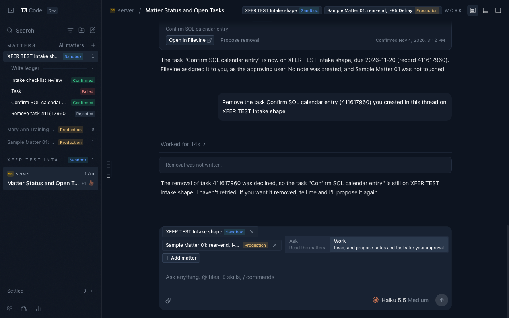</button></figure>
          <div class="col-body">
            <div class="letter">A</div>
            <h3>Sidebar first</h3>
            <div class="branch">lois/r1-sidebar &middot; 38ec2ffa3a</div>
            <p>Matters are a sidebar section above threads. Picking one filters the thread list and seeds new threads. The Write ledger is a sidebar section under the active Matter.</p>
            <dl class="kv">
              <dt>Upstream delta</dt><dd class="num">4 files, +86 / &minus;4</dd>
              <dt>Best for</dt><dd><span class="role">Paralegal speed</span></dd>
            </dl>
            <ul>
              <li>Fastest first answer: click the Matter, new thread, type.</li>
              <li>Smallest change to upstream files.</li>
              <li class="minus">Ledger is per thread, so a reviewer opens each one.</li>
              <li class="minus">Six Matters push the thread list below the fold.</li>
            </ul>
          </div>
        </article>
        <article class="col">
          <figure><button type="button" data-full="img/b-overview.png" data-cap="B. Matter chips in the composer with the right drawer open on the Overview tab">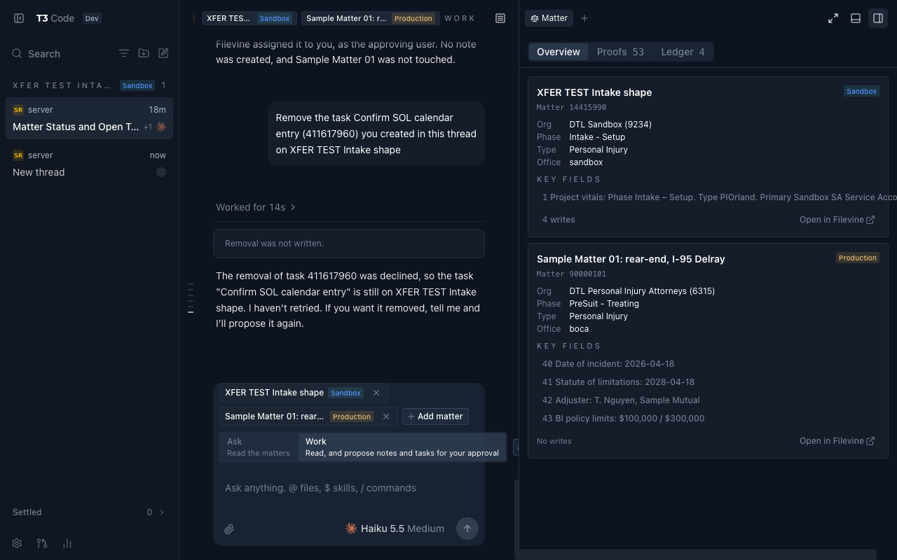</button></figure>
          <div class="col-body">
            <div class="letter">B</div>
            <h3>Composer chip and drawer</h3>
            <div class="branch">lois/r2-composer-drawer &middot; 7df5d9a3e9</div>
            <p>Matter chips sit in the composer. A right drawer carries Overview, Proofs and Ledger tabs and opens on the citation you clicked. Closest to upstream T3 Code.</p>
            <dl class="kv">
              <dt>Upstream delta</dt><dd class="num">5 files, +95 / &minus;79</dd>
              <dt>Best for</dt><dd><span class="role">Everyday authoring</span></dd>
            </dl>
            <ul>
              <li>Citation to proof in one click, always reachable from the composer.</li>
              <li>Pending-write badge on the drawer button.</li>
              <li>Chips collapse to two plus a count, so six Matters stay legible.</li>
              <li class="minus">Rewrites the right-panel store, the largest surface change.</li>
            </ul>
          </div>
        </article>
        <article class="col">
          <figure><button type="button" data-full="img/c-page.png" data-cap="C. The Matter page with Threads, Proofs, Ledger and Overview tabs">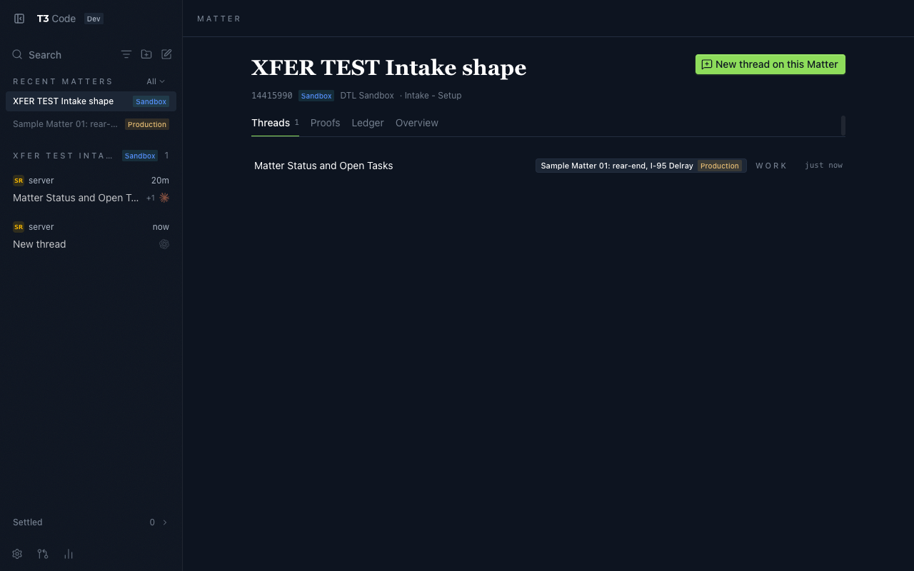</button></figure>
          <div class="col-body">
            <div class="letter">C</div>
            <h3>Page per Matter</h3>
            <div class="branch">lois/r3-matter-page &middot; f1009fa719</div>
            <p>Each Matter is a routed page with Threads, Proofs, Ledger and Overview tabs. A thread opens inside its Matter page header.</p>
            <dl class="kv">
              <dt>Upstream delta</dt><dd class="num">6 files, +68</dd>
              <dt>Best for</dt><dd><span class="role">Attorney review</span></dd>
            </dl>
            <ul>
              <li>Ledger aggregates writes across the Matter's recent threads, each linked back.</li>
              <li>A standing home for the Matter outside any thread.</li>
              <li class="minus">Adds a page type T3 Code does not have.</li>
              <li class="minus">Matter name shows twice on a thread.</li>
            </ul>
          </div>
        </article>
      </div>
    </section>

    <section aria-labelledby="score">
      <h2 id="score">Scorecard</h2>
      <div class="rule"></div>
      <p class="lede">Scored after one integrated run of each rendition against the same thread: two Matters, one sandbox and one synthetic production, and four ledger entries. Scores run 1 to 5.</p>
      <div class="tablewrap">
        <table>
          <thead><tr><th scope="col">Criterion</th><th scope="col">A. Sidebar</th><th scope="col">B. Drawer</th><th scope="col">C. Page</th></tr></thead>
          <tbody>
            <tr>
              <th scope="row">Time to first answer<small>Clicks from app open to a cited Ask answer</small></th>
              <td class="best"><span class="score">5</span>Click the Matter, click New thread, type. The active Matter seeds the composer.</td>
              <td><span class="score">4</span>New thread, pick the Matter from the chip picker, type. One extra step on every thread.</td>
              <td><span class="score">4</span>Click the Matter, click "New thread on this Matter", type. Same count as A, but the page loads first.</td>
            </tr>
            <tr>
              <th scope="row">Clarity of which Matter a Write hit<small>Can a reviewer tell, from the thread alone, which Matter and Org every Write went to</small></th>
              <td><span class="score">3</span>The receipt names the Matter and Org, but the sidebar ledger is scoped to the current thread.</td>
              <td><span class="score">4</span>Receipt plus the drawer Ledger tab, both inside the thread. The pending-write badge says a write is waiting.</td>
              <td class="best"><span class="score">5</span>Receipt in the thread, and the Matter page Ledger aggregates writes across recent threads with a link back to each.</td>
            </tr>
            <tr>
              <th scope="row">Discoverability of Proofs<small>Steps from a citation to its document region</small></th>
              <td><span class="score">3</span>Citation click opens the Proofs panel; no standing entry point outside a thread.</td>
              <td class="best"><span class="score">5</span>Citation click opens the drawer on that citation, and the drawer button is always in the composer.</td>
              <td><span class="score">4</span>Proofs tab on the Matter page plus citation click in the thread. Two homes.</td>
            </tr>
            <tr>
              <th scope="row">Upstream delta<small>Files changed outside the Matter components and the shared layer</small></th>
              <td class="best"><span class="score">4</span><span class="num">4 files, +86 / &minus;4.</span> Sidebar, its logic and test, new-thread hook.</td>
              <td><span class="score">3</span><span class="num">5 files, +95 / &minus;79.</span> Rewrites the right-panel store and tabs.</td>
              <td><span class="score">3</span><span class="num">6 files, +68.</span> A new route and route tree plus two-line hooks. Small per file, but a new page type.</td>
            </tr>
            <tr>
              <th scope="row">Survives six Matters<small>Chrome stays legible with six Matters across two Orgs</small></th>
              <td><span class="score">2</span>Six sidebar rows plus a per-Matter ledger section push threads below the fold.</td>
              <td class="best"><span class="score">4</span>Chips collapse to two plus "+N" from the fourth Matter. The drawer is per thread so it does not grow. Breaks the glossary rule that chips never collapse.</td>
              <td><span class="score">3</span>The Recent Matters list scales, but a six-Matter thread repeats the name twice and the "Also" strip wraps.</td>
            </tr>
          </tbody>
          <tfoot><tr><th scope="row">Total</th><td>17</td><td class="best">22</td><td>20</td></tr></tfoot>
        </table>
      </div>

      <div class="bars" aria-label="Scores by criterion">
        <div class="bar-row"><div class="label">First answer</div><div class="bar-set">
          <div class="bar a"><span class="who">A</span><div class="track"><div class="fill" style="width:100%"></div></div><span class="n">5</span></div>
          <div class="bar b"><span class="who">B</span><div class="track"><div class="fill" style="width:80%"></div></div><span class="n">4</span></div>
          <div class="bar c"><span class="who">C</span><div class="track"><div class="fill" style="width:80%"></div></div><span class="n">4</span></div>
        </div></div>
        <div class="bar-row"><div class="label">Write clarity</div><div class="bar-set">
          <div class="bar a"><span class="who">A</span><div class="track"><div class="fill" style="width:60%"></div></div><span class="n">3</span></div>
          <div class="bar b"><span class="who">B</span><div class="track"><div class="fill" style="width:80%"></div></div><span class="n">4</span></div>
          <div class="bar c"><span class="who">C</span><div class="track"><div class="fill" style="width:100%"></div></div><span class="n">5</span></div>
        </div></div>
        <div class="bar-row"><div class="label">Proofs discoverability</div><div class="bar-set">
          <div class="bar a"><span class="who">A</span><div class="track"><div class="fill" style="width:60%"></div></div><span class="n">3</span></div>
          <div class="bar b"><span class="who">B</span><div class="track"><div class="fill" style="width:100%"></div></div><span class="n">5</span></div>
          <div class="bar c"><span class="who">C</span><div class="track"><div class="fill" style="width:80%"></div></div><span class="n">4</span></div>
        </div></div>
        <div class="bar-row"><div class="label">Upstream delta</div><div class="bar-set">
          <div class="bar a"><span class="who">A</span><div class="track"><div class="fill" style="width:80%"></div></div><span class="n">4</span></div>
          <div class="bar b"><span class="who">B</span><div class="track"><div class="fill" style="width:60%"></div></div><span class="n">3</span></div>
          <div class="bar c"><span class="who">C</span><div class="track"><div class="fill" style="width:60%"></div></div><span class="n">3</span></div>
        </div></div>
        <div class="bar-row"><div class="label">Six Matters</div><div class="bar-set">
          <div class="bar a"><span class="who">A</span><div class="track"><div class="fill" style="width:40%"></div></div><span class="n">2</span></div>
          <div class="bar b"><span class="who">B</span><div class="track"><div class="fill" style="width:80%"></div></div><span class="n">4</span></div>
          <div class="bar c"><span class="who">C</span><div class="track"><div class="fill" style="width:60%"></div></div><span class="n">3</span></div>
        </div></div>
      </div>
      <div class="legend"><span class="la">A. Sidebar</span><span class="lb">B. Drawer</span><span class="lc">C. Page</span></div>
    </section>

    <section aria-labelledby="flow">
      <h2 id="flow">The shared write flow</h2>
      <div class="rule"></div>
      <p class="lede">Every rendition routes a Filevine write through the same Approval card, even when the thread runs in Full access. This run created one task on the sandbox training project, edited it before approval, then proposed and rejected its removal.</p>
      <div class="gallery steps">
        <figure class="shot"><button type="button" data-full="img/shared-approval.png" data-cap="Approval card for a proposed task, with Edit, Approve and Reject">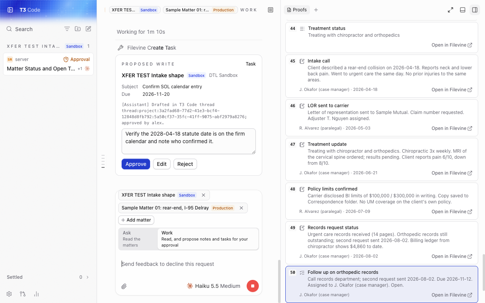</button><figcaption><b>Approval card.</b> The agent proposes a task. The card names the Matter and Org and offers Edit, Approve and Reject.</figcaption></figure>
        <figure class="shot"><button type="button" data-full="img/shared-receipt.png" data-cap="Confirmed receipt after approving the edited task">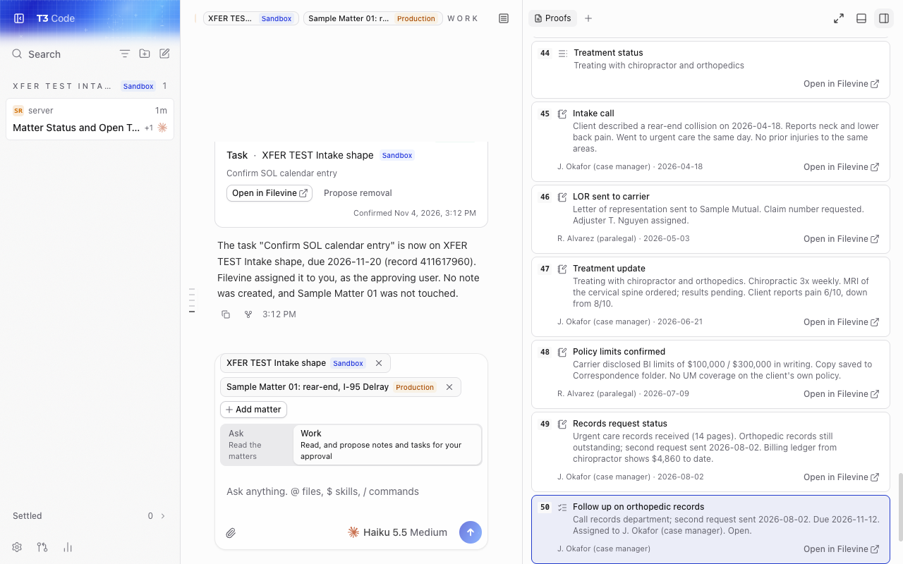</button><figcaption><b>Receipt.</b> After "Approve edited", the receipt shows Confirmed with the record id and a link into Filevine.</figcaption></figure>
        <figure class="shot"><button type="button" data-full="img/shared-removal.png" data-cap="Removal approval card, rejected">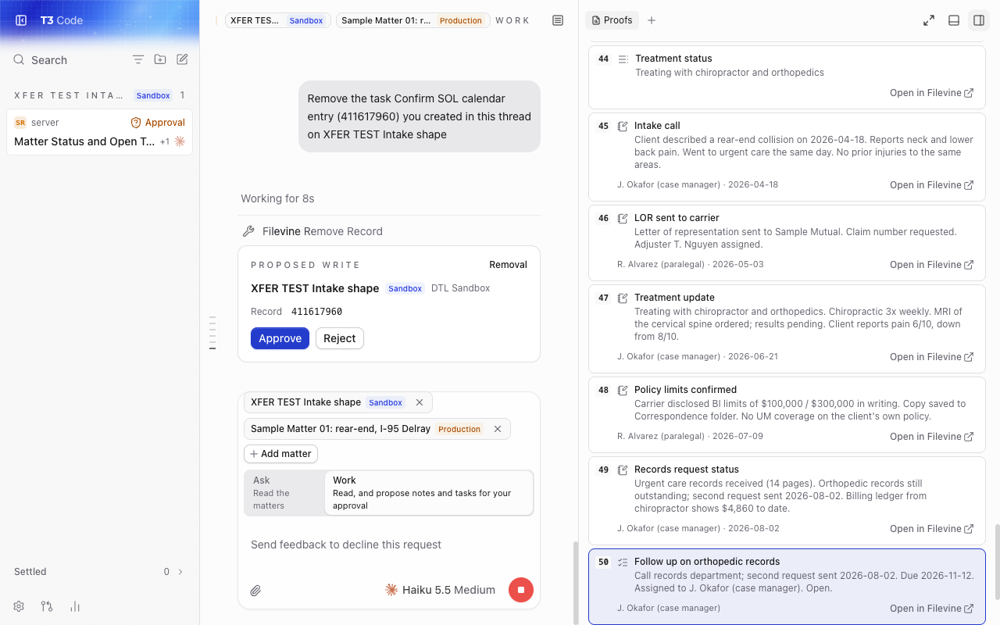</button><figcaption><b>Removal.</b> "Propose removal" raises a second card. Rejecting it leaves the task in place and the thread says so.</figcaption></figure>
        <figure class="shot"><button type="button" data-full="img/shared-ledger.png" data-cap="Write ledger in the DTL dark theme">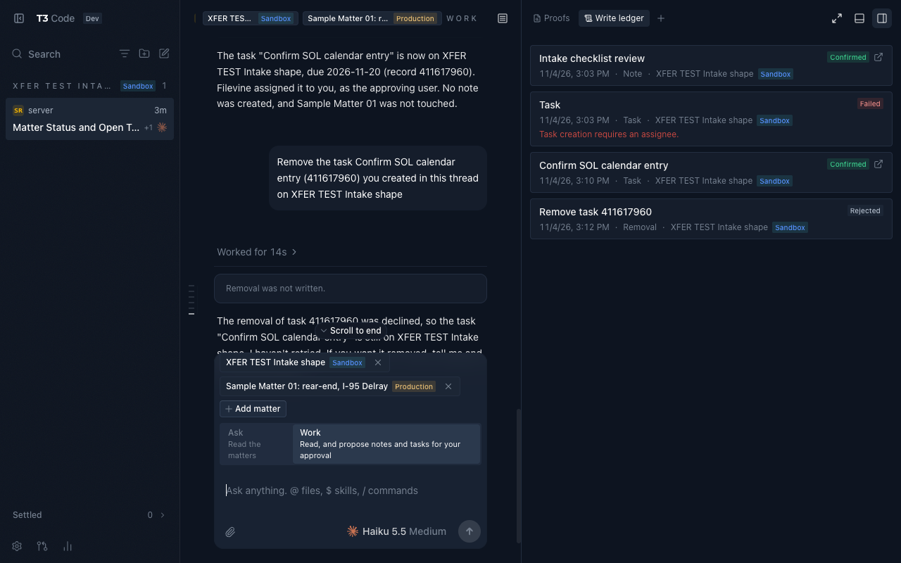</button><figcaption><b>Ledger.</b> Four entries from the run: note Confirmed, task Failed, task Confirmed, removal Rejected.</figcaption></figure>
      </div>
    </section>

    <section aria-labelledby="gal">
      <h2 id="gal">More screens</h2>
      <div class="rule"></div>
      <div class="gallery three">
        <figure class="shot"><button type="button" data-full="img/shared-chips.png" data-cap="Matter chips and the Ask / Work mode control in the composer">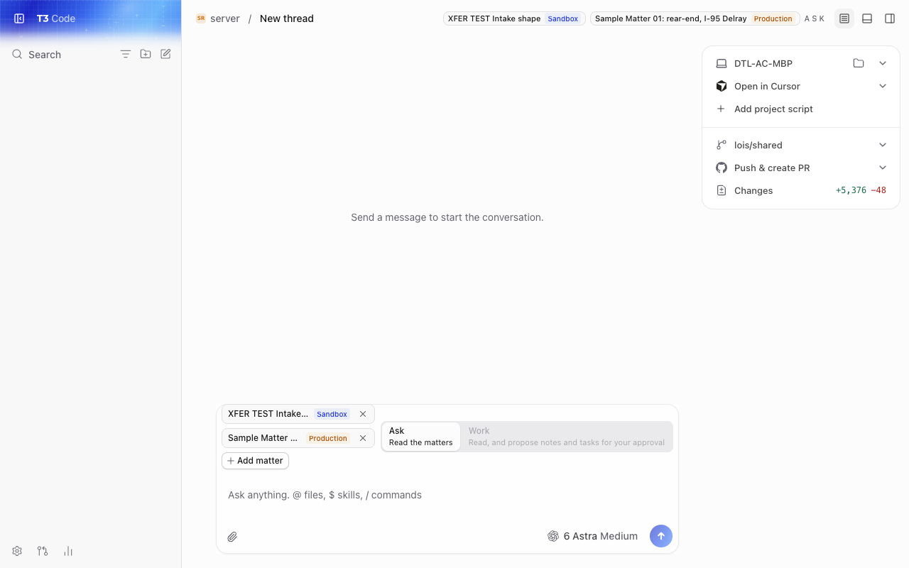</button><figcaption><b>Shared.</b> Matter chips with Org badges and the Ask or Work control.</figcaption></figure>
        <figure class="shot"><button type="button" data-full="img/shared-proofs.png" data-cap="Proofs panel opened from a citation">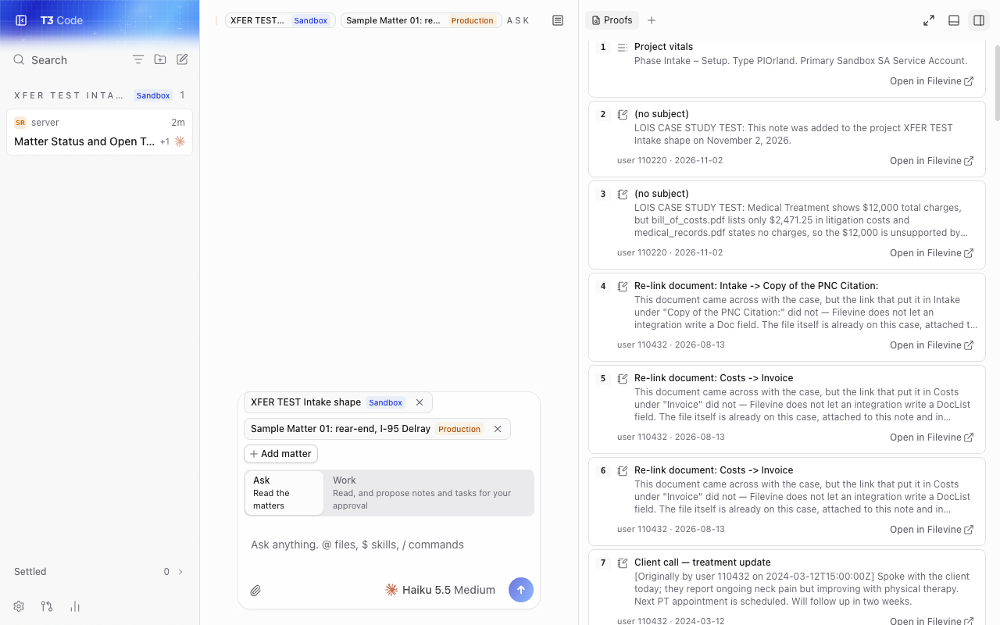</button><figcaption><b>Shared.</b> Proofs panel opened from a citation in the answer.</figcaption></figure>
        <figure class="shot"><button type="button" data-full="img/b-ledger.png" data-cap="B. Drawer on the Ledger tab">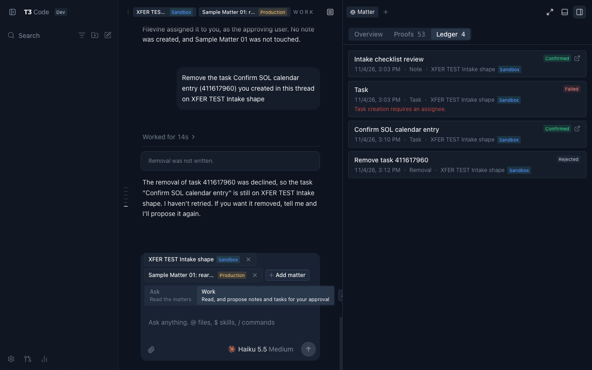</button><figcaption><b>B.</b> The drawer on its Ledger tab, scoped to the current thread.</figcaption></figure>
        <figure class="shot"><button type="button" data-full="img/c-ledger.png" data-cap="C. Matter page Ledger tab aggregating writes across threads">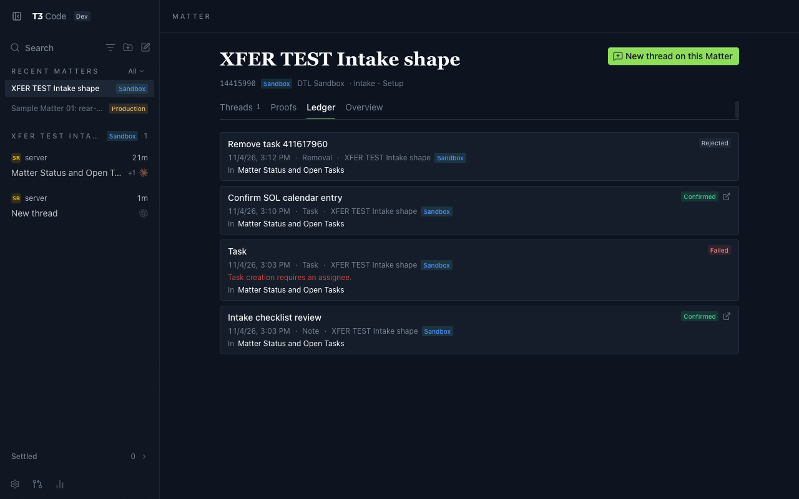</button><figcaption><b>C.</b> The Matter page Ledger tab. Each entry links back to the thread it came from.</figcaption></figure>
        <figure class="shot"><button type="button" data-full="img/c-thread.png" data-cap="C. A thread opened inside its Matter page header">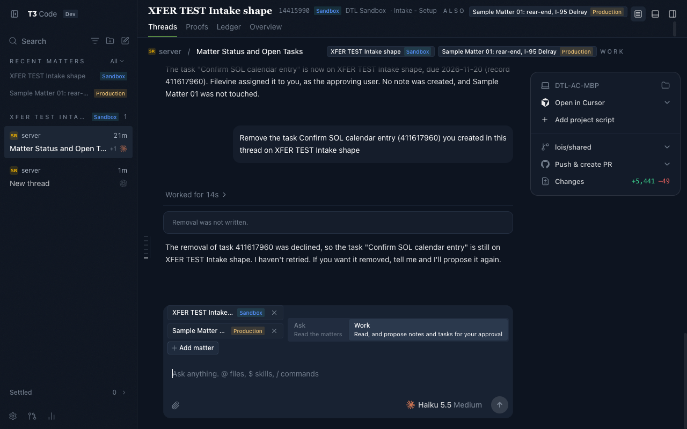</button><figcaption><b>C.</b> A thread inside its Matter page. The Matter name appears in the header and again in the thread chips.</figcaption></figure>
      </div>
    </section>

    <section aria-labelledby="defects">
      <h2 id="defects">Defects seen in the runs</h2>
      <div class="rule"></div>
      <div class="defects">
        <div class="defect"><span class="tag">A</span><span>A thread drops out of the list when the open thread lacks the active Matter.</span></div>
        <div class="defect"><span class="tag">B</span><span>The composer "Matter drawer" button is clipped by the right panel edge, and the Overview "Key fields" line overflows its card.</span></div>
        <div class="defect"><span class="tag">C</span><span>The Matter name shows twice on a thread, once in the page header and once in the thread breadcrumb chips.</span></div>
        <div class="defect"><span class="tag">All</span><span>The task receipt keeps the "Removal requested" label after the removal is rejected.</span></div>
      </div>
    </section>

  </div>
</main>

<footer>
  <div class="wrap">
    <div>Branches live in the local fork only and were not pushed: <code>lois/shared</code>, <code>lois/r1-sidebar</code>, <code>lois/r2-composer-drawer</code>, <code>lois/r3-matter-page</code>. The scored rubric is committed at <code>docs/lois/renditions.md</code>.</div>
    <div>Writes went only to the sandbox training project 14415990: note 411616636 and task 411617960, both carrying the Assistant marker. No production Filevine record was touched.</div>
    <div>Screenshots were taken in the T3 Code browser panel with the DTL dark theme. All Matter names shown are the two training projects or synthetic data.</div>
  </div>
</footer>

<dialog id="lightbox" aria-label="Enlarged screenshot">
  <button type="button" id="lightbox-close">Close</button>
  
  <p id="lightbox-cap"></p>
</dialog>

<script>
  (function () {
    var dlg = document.getElementById("lightbox");
    var img = document.getElementById("lightbox-img");
    var cap = document.getElementById("lightbox-cap");
    document.querySelectorAll("button[data-full]").forEach(function (b) {
      b.addEventListener("click", function () {
        img.src = b.getAttribute("data-full");
        img.alt = b.getAttribute("data-cap");
        cap.textContent = b.getAttribute("data-cap");
        dlg.showModal();
      });
    });
    document.getElementById("lightbox-close").addEventListener("click", function () { dlg.close(); });
    dlg.addEventListener("click", function (e) { if (e.target === dlg) dlg.close(); });
  })();
</script>
